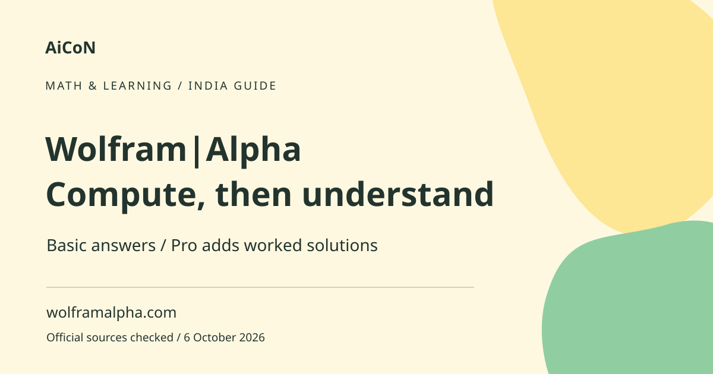

Wolfram|Alpha: computed answers, free vs Pro
Wolfram|Alpha computes answers from mathematical or factual input. It is useful for checking a calculation and exploring a problem, but detailed step-by-step solutions and app photo input are Pro features.

What is different from a chatbot?
A conversational AI generates a reply in language. Wolfram|Alpha is designed to interpret a query and compute results using its computational system and knowledge resources. It can work with equations, quantities and other structured questions. Clear input matters: a vague sentence can produce an unintended interpretation even when the subsequent calculation is correct.
When students might use it
Use it to compare your own result, explore a graph or check units. A Kerala student revising mathematics can first solve on paper and then ask the tool to compute the same expression. If the answers differ, inspect your notation and assumptions before assuming either result is right. It is a study aid, not permission to submit someone else's worked solution as your own.
How to use it, step by step
- Open the official Wolfram|Alpha site. For mobile, follow the vendor's app link and confirm the publisher in your local store.
- Type one clear calculation or factual query at a time. For algebra, name the variable and use parentheses to show grouping.
- For physical quantities, include units. Make clear whether you need degrees or radians for angles.
- Read the tool's interpretation of your input before copying the answer. Check that it solved the intended expression.
- Review the output units, graph axes, domain and any assumptions. A graph can look plausible while showing a different range than your question.
- If you need the method, check whether Step-by-Step Solutions is available in your plan. Do not assume a visible answer includes a free derivation.
- Compare with your textbook or teacher's method. Ask why each step works rather than only memorising the final value.
- For a consequential engineering, financial or medical use, check the calculation and source independently with someone qualified.
Basic use versus paid Pro
The checked pricing page separates Basic from Pro. Basic does not include step-by-step solutions. Pro lists worked solutions, practice problems, guided calculators, longer computation time, file analysis and downloadable results. Its app features include enhanced steps and photo input. These are plan entitlements, not a promise that every possible question has a worked explanation.
Price and India availability
The live page displayed Pro at ~₹963/month (US$9.99, rough conversion at ~₹96.43/USD from the 6 October report linked below, not an India checkout quote), but other price fragments were incomplete. Confirm the selected plan, billing interval, local tax and actual INR charge before purchasing. The Android product page says the same Pro subscription can be used in the app or website by signing in with the same Wolfram ID. We did not test India checkout or mobile-store purchase conditions.
Common reasons for an unexpected answer
An expression without brackets may be grouped differently than you intended. An angle may be interpreted in radians when you meant degrees. A word problem can omit an assumption such as constant speed or a particular interest convention. Input errors come before mathematical accuracy. Rephrase the query in smaller pieces, then check each piece against the original question.
Files, photos and privacy
A paid upload feature can analyse information you provide, but that does not make a private document safe to share. Remove names, account details and confidential work before uploading. A blurred photograph can turn a minus sign into another symbol. Always inspect the transcribed equation before accepting a result. Downloaded outputs may also reveal the problem you entered.
Frequently asked questions
Are worked solutions free?
Basic specifically excludes step-by-step solutions; check Pro for the required feature.
Can I use the same Pro subscription on the website and Android?
The official app page says yes when you use the same Wolfram ID.
Can photo input make mistakes?
Yes. Check the interpreted expression before relying on the result.
Should I use it to copy homework?
Use it to understand and check work, respecting your school's rules.
Official sources
- PTI exchange-rate report used for rough INR estimates
- Official Pro pricing and features
- Official Android app features
Checked 6 October 2026. Expanded from an AiCoN short post delivered 6 October 2026. Portal screens and rules can change.